Letter Spacing
자간
윤고딕 700을 디지털 환경에서 사용할 때, 기본 자간(0%)은 글자 간의 유격이 다소 넓어 보여 시선이 분산될 위험이 있습니다. 실험 결과, 자간을 -2%로 설정했을 때 글자들의 획이 서로를 적절히 당겨주며 단어의 ‘덩어리감’이 극대화되는 것을 확인했습니다. 이렇게 응집된 단어는 전체를 하나의 이미지처럼 빠르게 훑게 만들어 독서 속도를 높이고, 화면 위에서도 안정적인 시각적 리듬을 유지하도록 돕는다고 판단했습니다.
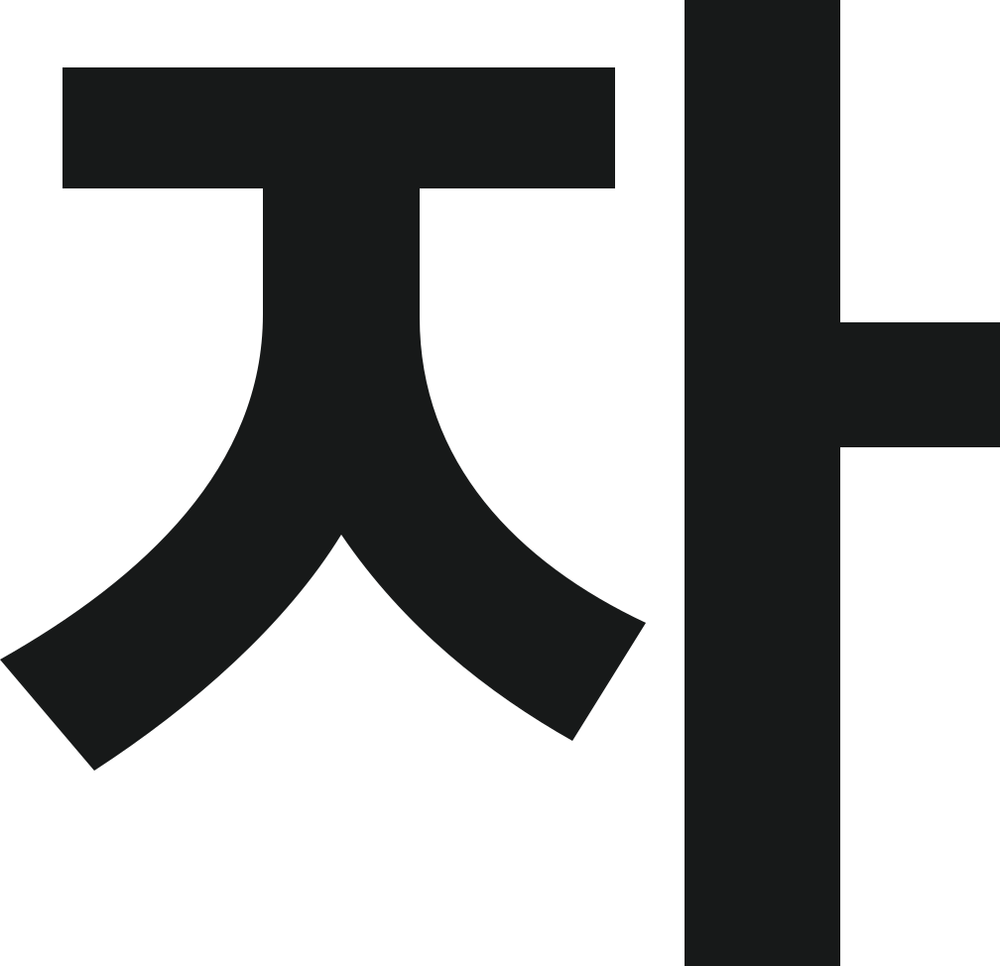
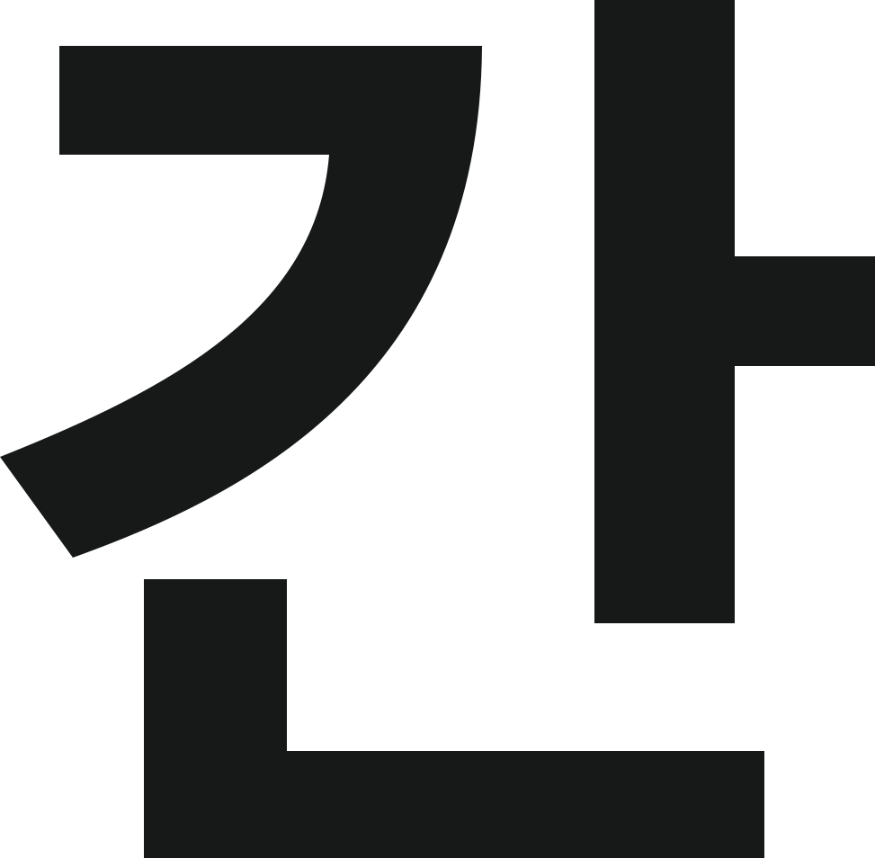
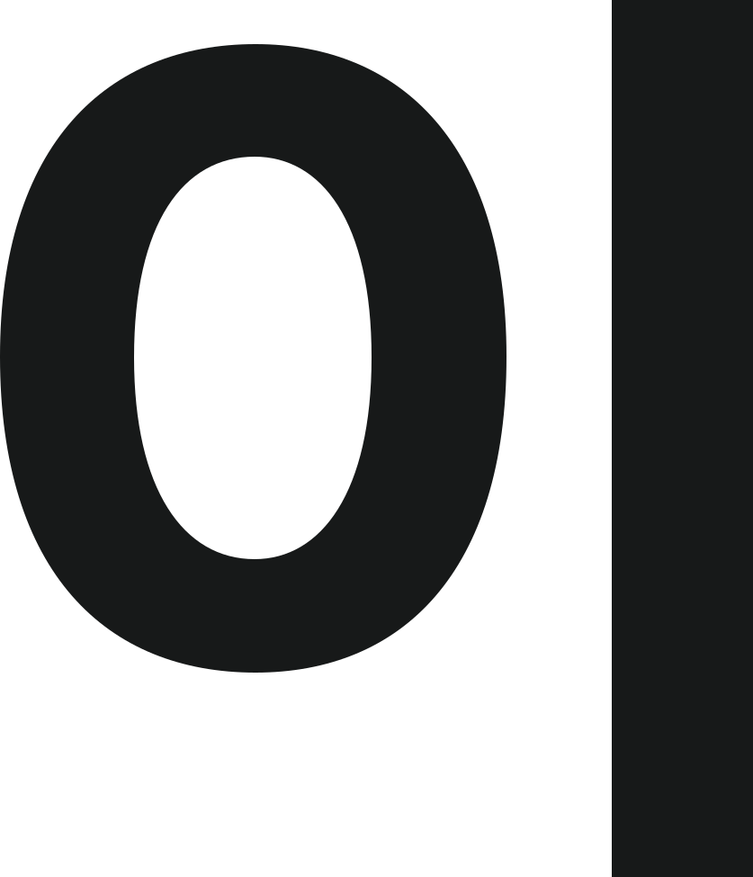
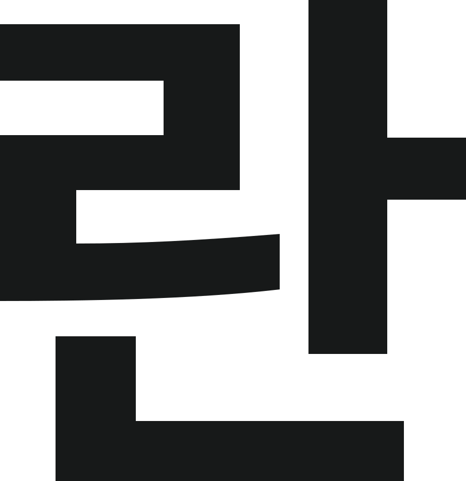
Negative Spacing
자간의 응집력
제목과 강조문
윤고딕 700을 디지털 환경에서 사용할 때, 기본 자간(0%)은 글자 간의 유격이 다소 넓어 보여 시선이 분산될 위험이 있습니다. 실험 결과, 자간을 -2%로 설정했을 때 글자들의 획이 서로를 적절히 당겨주며 단어의 ‘덩어리감’이 극대화되는 것을 확인했습니다. 이렇게 응집된 단어는 전체를 하나의 이미지처럼 빠르게 훑게 만들어 독서 속도를 높이고, 화면 위에서도 안정적인 시각적 리듬을 유지하도록 돕는다고 판단했습니다.
48px / 70 / 행간 150%
|자간 -4%|
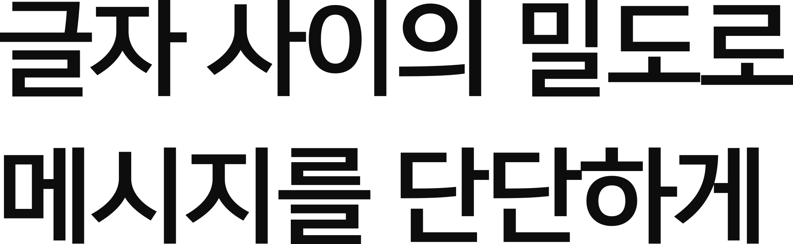
|자간 0%|
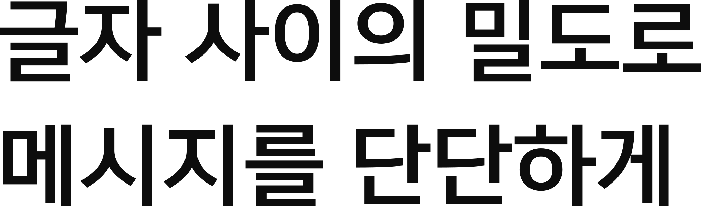
|자간 -2%|
|자간 2%|
Standard Spacing
자간의 판독성
설명문과 캡션
세부 정보나 작은 본문에서도 자간의 디테일이 필요했습니다. 자간이 0% 이상으로 넓어지면 시선이 글줄 밖으로 새어 나가 집중력이 흐트러지는 반면, 지나치게 좁히면 획끼리 간섭을 일으켜 글자가 뭉쳐 보였습니다. 때문에 본문에서의 자간은 -2%가 가장 가독성이 좋다고 생각합니다.
20px / 50 / 행간 170%
|자간 -4%|
|자간 -2%|
|자간 0%|
|자간 2%|
Line Spacing
행간
행간…
윗줄의 기준선에서 아랫줄의 기준선까지의 수직 거리를 뜻하며, 독자의 시선이 문장을 따라 흐르는 리듬을 만들어냅니다.
행간
글자 크기
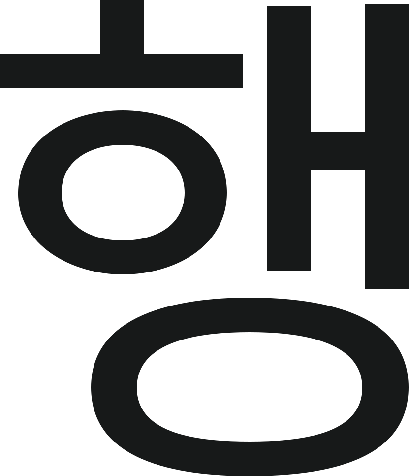
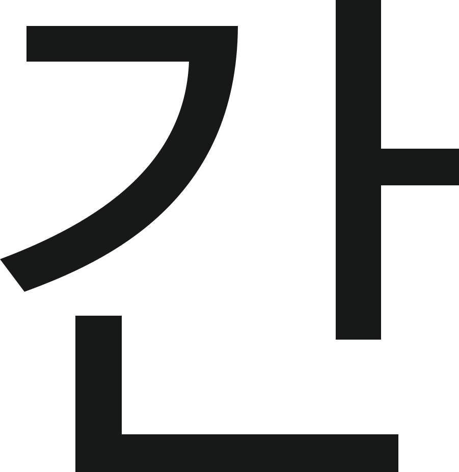
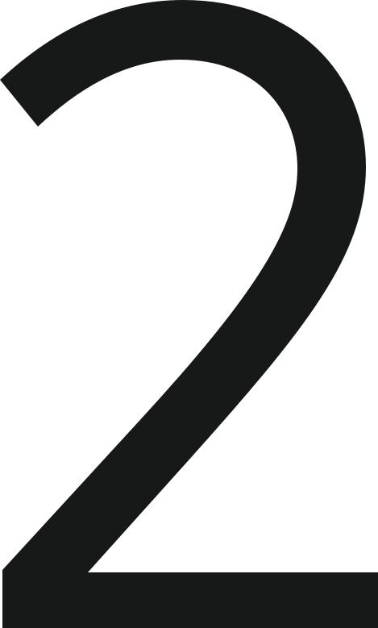
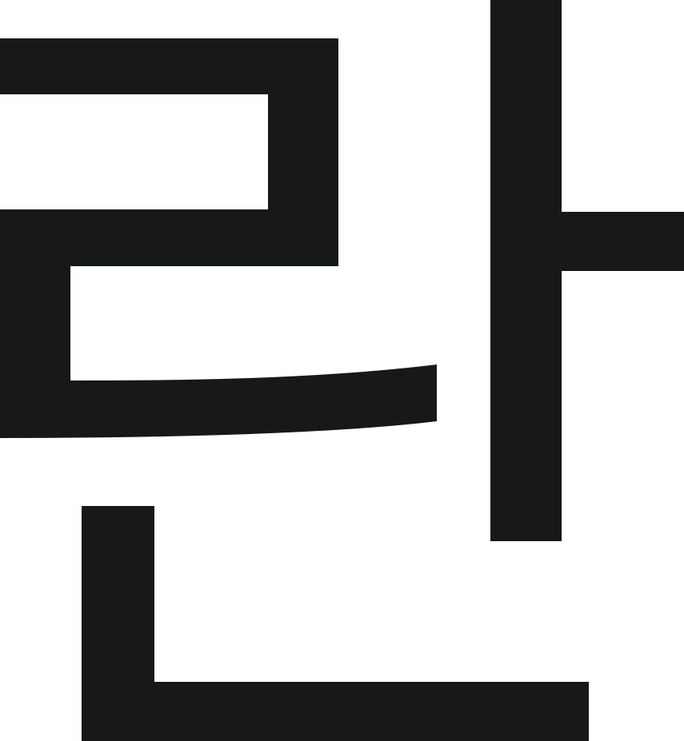
Tight Leading
행간의 긴장감
제목과 강조문
제목이나 짧은 강조문에서 행간은 단순히 줄 사이의 간격을 넘어, 텍스트가 하나의 ‘시각적 덩어리’로 기능하게 만드는 장치입니다. 윤고딕 700의 굵은 웨이트를 사용할 때 행간이 너무 넓으면 각 줄이 분절되어 보여 메시지의 힘이 분산됩니다. 실험 결과, 제목용 텍스트에서는 행간을 130%~140% 수준으로 좁게 설정했을 때 글자들 사이의 유격이 단단하게 맞물렸습니다.
48px / 70 / 자간 -2%
|행간 110%|
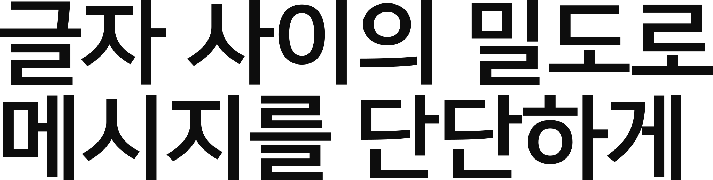
|행간 150%|
|행간 140%|
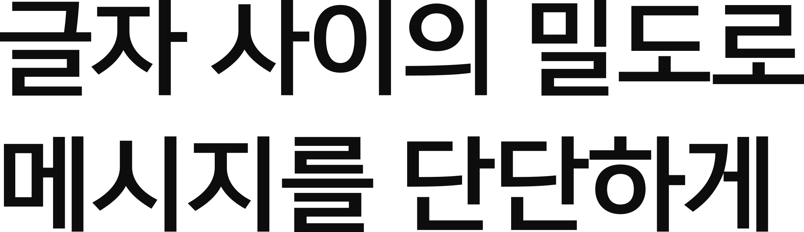
|행간 170%|
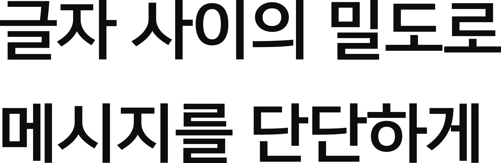
Optimal Leading
행간의 리듬
설명문과 캡션
장문의 본문에서는 사용자의 시각적 피로도를 낮추는 유연한 호흡이 필요합니다. 윤고딕 700은 획이 정직하고 힘차기 때문에 본문에서 행간이 좁으면 줄 간의 간섭이 생겨 독서의 흐름이 끊기기 쉽습니다. 웹 환경에서의 최적 가독성을 위해 본문 행간은 170%를 유지하는 것이 가장 보기 좋았습니다.
20px / 50 / 행간 170%
|행간 110%|
우린 아마 즐거우려고 애를 쓰는 거야. 문을 두드리면 없는 척하는 거야. 뭘 훔친 사람처럼 숨어주기야. 눈을 가리고서는 뻔히 아는 빛도 모르는 척 하기야. 굳이 들여다보지 않으면 시답잖은 농담처럼 우린 언제든 잊혀지기 쉬워. 술래야. 나는 너를 오래도록 찾아 나설래. 술래야. 나는 너를 오래도록 찾아 나설래
|행간 130%|
우린 아마 즐거우려고 애를 쓰는 거야. 문을 두드리면 없는 척하는 거야. 뭘 훔친 사람처럼 숨어주기야. 눈을 가리고서는 뻔히 아는 빛도 모르는 척 하기야. 굳이 들여다보지 않으면 시답잖은 농담처럼 우린 언제든 잊혀지기 쉬워. 술래야. 나는 너를 오래도록 찾아 나설래. 술래야. 나는 너를 오래도록 찾아 나설래
|행간 150%|
우린 아마 즐거우려고 애를 쓰는 거야. 문을 두드리면 없는 척하는 거야. 뭘 훔친 사람처럼 숨어주기야. 눈을 가리고서는 뻔히 아는 빛도 모르는 척 하기야. 굳이 들여다보지 않으면 시답잖은 농담처럼 우린 언제든 잊혀지기 쉬워. 술래야. 나는 너를 오래도록 찾아 나설래. 술래야. 나는 너를 오래도록 찾아 나설래
|행간 170%|
우린 아마 즐거우려고 애를 쓰는 거야. 문을 두드리면 없는 척하는 거야. 뭘 훔친 사람처럼 숨어주기야. 눈을 가리고서는 뻔히 아는 빛도 모르는 척 하기야. 굳이 들여다보지 않으면 시답잖은 농담처럼 우린 언제든 잊혀지기 쉬워. 술래야. 나는 너를 오래도록 찾아 나설래. 술래야. 나는 너를 오래도록 찾아 나설래
비교꼴과 가독성 비교 (1)
프리텐다드
프리텐다드는 기본 자간이 좁게 설계된 가변 서체입니다. 동일한 -2% 설정 시, 윤고딕보다 더 촘촘한 밀도를 보여주어 현대적인 인상을 줍니다. 높은 x-height 덕분에 행간 170% 설정에서 줄 사이의 여백이 상대적으로 좁아 보였습니다.
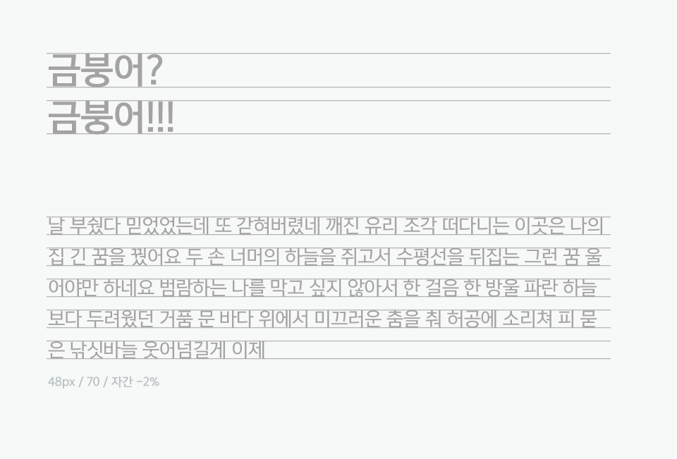
비교꼴과 가독성 비교 (2)
윤고딕 700
윤고딕 700은 글자가 꽉 찬 네모꼴 구조를 가집니다. 자간 -2%를 적용했을 때 글자 사이의 유격이 보기좋게 메워지며 가장 단단한 응집력을 보여주었습니다. 행간 170%는 직선적인 획들이 주는 딱딱함을 중화하여 본문의 가독성을 높여주었습니다.
비교꼴과 가독성 비교 (3)
Apple SD Gothic Neo
애플 산돌고딕 Neo는 세 서체 중 기본 자간이 가장 넓고 유연합니다. 자간 -2%를 적용하면 시선이 밖으로 새나가는 현상을 잡아주어 문장의 집중도가 눈에 띄게 높아졌습니다. 정갈한 획 덕분에 행간 170%에서 가장 맑고 깨끗한 시각적 인상을 남깁니다.
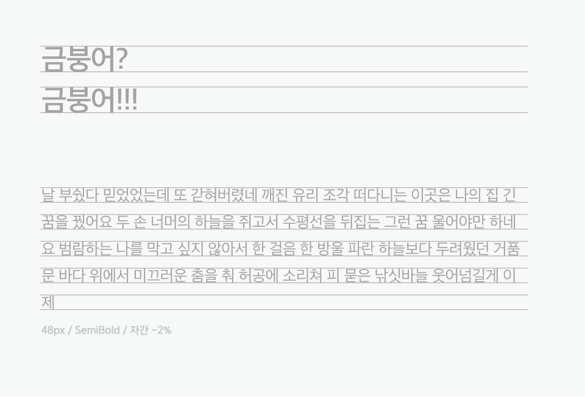
Spacing & White Space
타이포그래피 메시지 표현
자간, 행간 연출을 통한 포스터 제작
‘수-박’, ‘파-라-다-이스’와 같이 글자 사이의 간격을 극단적으로 넓히거나 하이픈(-)을 삽입하여 단어의 결속력을 의도적으로 해체했습니다. ‘여름 코코아’와 ‘겨울 수박’ 사이의 넓은 행간은 두 개념 사이의 시간적·심리적 거리를 시각화합니다. 반면, 작은 텍스트들은 촘촘한 행간을 유지하여 정보로서의 밀도를 높였습니다.
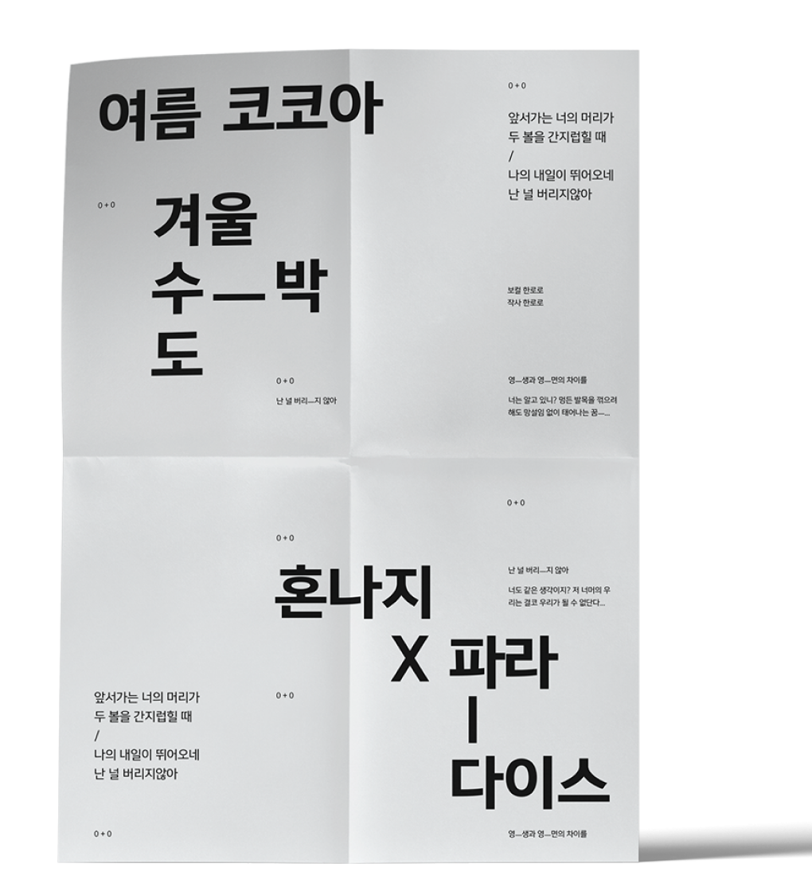